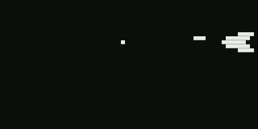
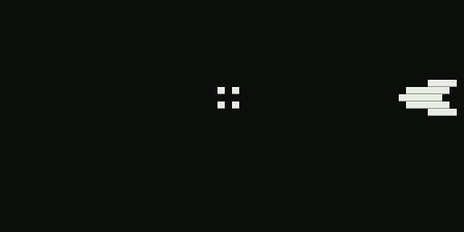

Missile Attack
P.E. Marston · DREAMER no. 4 (1980-12) p. 14 1K RAM



Your spacecraft is under attack from incoming missiles: dodge them, or line up with one and shoot it. A direct hit is worth 25 and the game ends after 10 shots or when you are hit. You cannot fire while moving or while your last shot is still on screen.
Keys
1 up, 9 down, F fire.
Files
| File | Version | Load | Run |
|---|---|---|---|
| Missile Attack.c8 | main | 0200-02FF | C000 |
Listing as transcribed (with notes): missile_attack.txt
Source
DREAMER no. 4 on archive.org, p. 14 (PDF page 14). Author: P.E. Marston.
Corrections applied
None.
Open doubts
None.